Come preparare e condurre lo Studio Torre di Guardia nei tempi
Versione 3.1 · novembre 2026
⚠ Due avvertenze importanti
Conduci sempre con la pubblicazione originale. L’app mostra i paragrafi e le domande solo per calcolare i tempi. Il conduttore non deve mai basarsi sul contenuto che compare nel timer: per presentare le informazioni all’uditorio usa sempre l’app JW Library o la rivista La Torre di Guardia stampata.
Durante lo studio, usa la modalità presentazione. È il modo consigliato di usare il timer mentre conduci, perché evita distrazioni: mostra solo ciò che serve, con i colori verde, giallo e rosso per capire con un’occhiata come sei messo con i tempi, e con pulsanti grandi e facili da premere per passare al paragrafo successivo e per segnare i commenti (sezione 9).
1Che cos’è e che cosa fa
Il Timer dello Studio aiuta il fratello che conduce lo Studio Torre di Guardia a distribuire bene il tempo e finire in orario.
Carichi l’articolo della settimana in PDF e l’app:
legge l’articolo e trova i paragrafi, le domande, i versetti da leggere, le immagini, le note e le domande di ripasso;
calcola quanto tempo dedicare a ogni parte: introduzione, ciascun paragrafo, ripasso e conclusione;
ti guida durante lo studio con un cronometro per paragrafo e colori che indicano se sei in tempo, nella tolleranza o oltre il tempo;
si riadatta da sola: se un paragrafo si allunga, distribuisce il tempo rimasto tra i successivi perché tu finisca in orario.
App non ufficiale. È un progetto gratuito e indipendente. Non è una pubblicazione ufficiale e non ha legami con jw.org né con l’organizzazione dei Testimoni di Geova. L’articolo viene analizzato sul tuo dispositivo: non viene inviato né salvato su alcun server.
Le immagini di questo manuale usano un articolo di esempio inventato, non un vero articolo della Torre di Guardia.
Tocca il pulsante Condividi (il quadrato con la freccia verso l’alto).
Scegli “Aggiungi alla schermata Home” e tocca Aggiungi. Comparirà l’icona arancione del cronometro.
Computer o tablet
Apri temporizador-estudio.vercel.app nel browser. In Chrome ed Edge puoi installarla come app dall’icona di installazione nella barra degli indirizzi.
Aggiornamenti: quando c’è una nuova versione, l’app mostra l’avviso “È disponibile una nuova versione dell’app.” con il pulsante Aggiorna. Non si aggiorna mai da sola nel mezzo di uno studio.
3La schermata iniziale
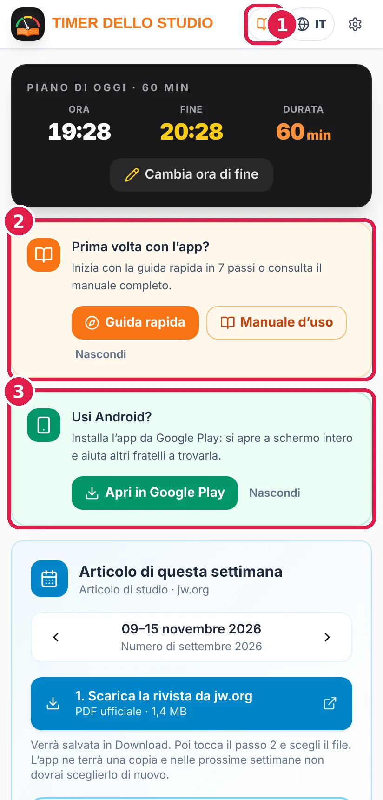
Schermata iniziale con il piano di oggi e l’articolo della settimana.
Dall’alto verso il basso trovi:
Barra superiore: il selettore della lingua (globo con il codice, per esempio IT) e il pulsante delle impostazioni⚙. Con un articolo caricato compaiono anche i pulsanti schermo intero, esporta e ricomincia.
Piano di oggi: l’ora attuale, l’ora in cui lo studio finisce e la sua durata. Con “Cambia ora di fine” stabilisci tu l’ora in cui finire (per esempio, le 20:28); l’app adatta la durata.
Articolo di questa settimana: per scaricare la rivista da jw.org e aprirla nell’app (vedi la sezione 4).
Visita del sorvegliante di circoscrizione: un interruttore per lo studio di 30 minuti senza lettura dei paragrafi (sezione 13).
Impostazioni dello studio: un riepilogo delle tue impostazioni (durata, velocità di lettura, tempo per risposta e introduzione), con il link Cambia.
Area in cui trascinare il PDF, per chi ha già il file.
4Caricare l’articolo della settimana
La scheda “Articolo di questa settimana” mostra la settimana corrente (per esempio, 9-15 novembre 2026) e il numero della Torre di Guardia che la contiene. Con le frecce ‹› puoi scegliere un’altra settimana.
“1. Scarica la rivista da jw.org” apre il PDF ufficiale del numero corrispondente. Su Android viene salvato in Download; su iPhone tocca Condividi → “Salva in File”.
“2. Scegli il PDF scaricato”: seleziona quel file. L’app cerca nella rivista l’articolo della settimana scelta e lo analizza.
La Torre di Guardia viene scaricata nella lingua dell’app. Se l’app è in italiano, viene scaricata l’edizione italiana; se è in inglese, quella inglese, e così per tutte le lingue. Per scaricare un’altra lingua, cambia prima la lingua dell’app (sezione 14). In portoghese viene scaricata l’edizione del Portogallo o quella del Brasile, secondo la tua scelta.
L’app conserva una copia della rivista. Le settimane successive dello stesso numero si aprono direttamente con “Apri l’articolo di questa settimana”, senza scaricare nulla. Le riviste salvate si cancellano da sole 3 mesi dopo la loro ultima settimana.
Sul computer puoi anche trascinare il PDF nell’area in basso o scegliere la cartella in cui conservi le riviste, e l’app le troverà da sola.
Dice che la rivista non è ancora pubblicata? jw.org pubblica ogni numero alcune settimane prima. Se scegli una settimana molto lontana, potrebbe non essere ancora disponibile.
5Il riepilogo e il piano dello studio
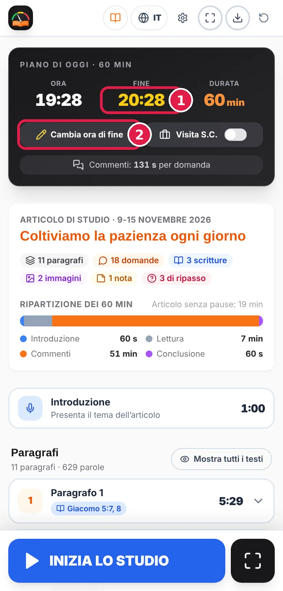
In alto il piano di oggi; sotto, il riepilogo dell’articolo.
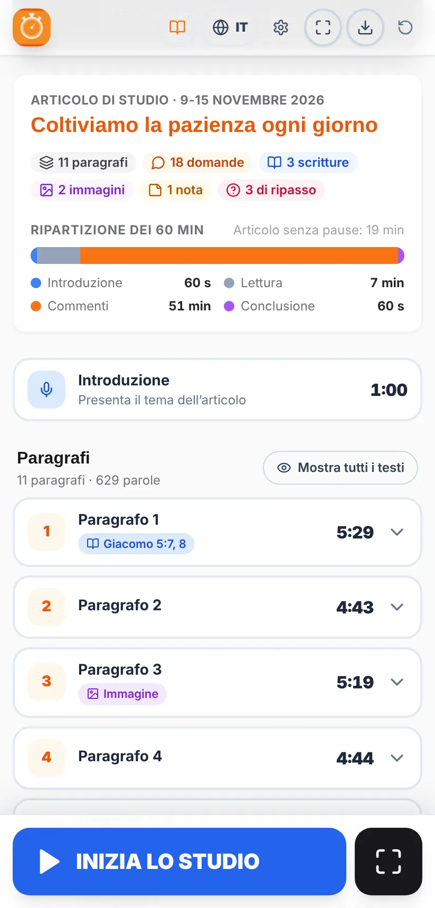
Riepilogo con la ripartizione dei 60 minuti.
Dopo aver caricato l’articolo vedrai:
Titolo e settimana dell’articolo di studio.
Etichette del contenuto: numero di paragrafi, domande, versetti da leggere, immagini, note e domande di ripasso.
Ripartizione del tempo: una barra colorata con ciò che va a Introduzione, Lettura, Commenti e Conclusione. Indica anche quanto durerebbe l’articolo letto senza pause.
Nella scheda del piano, l’avviso “Commenti: X s per domanda” ti dice quanto tempo c’è in media per rispondere a ogni domanda.
Se l’articolo è troppo lungo per il tempo scelto, compare l’avviso “Non ci sta” con quanto manca. Puoi allungare la durata o scegliere una lettura più veloce nelle Impostazioni.
6L’elenco dei paragrafi
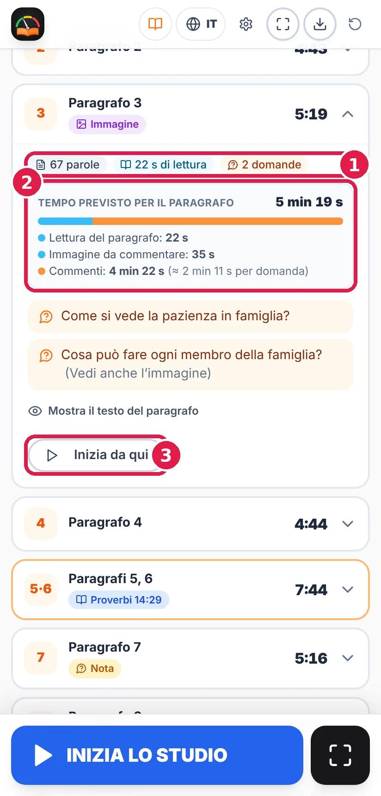
Paragrafo aperto con la sua domanda, l’immagine e il pulsante “Inizia da qui”.
Ogni paragrafo occupa una riga con il numero, il tempo previsto e l’ora approssimativa in cui dovrebbe finire. Le etichette colorate indicano ciò di cui tenere conto:
Etichetta
Che cosa significa
Giacomo 5:7, 8
C’è un versetto da leggere. Viene mostrato il riferimento esatto.
Immagine
La domanda rimanda a un’immagine dell’articolo (“Vedi anche l’immagine”).
Nota
C’è una nota in calce da commentare.
★ Punto chiave
La domanda menziona un riquadro o un’idea evidenziata tra virgolette.
Tocca un paragrafo per aprirlo. Vedrai le parole, il tempo di lettura, la domanda e, se è lungo, il tempo extra per altri commenti. Da lì:
“Mostra il testo del paragrafo” mostra il testo completo. Con “Mostra tutti i testi” si aprono tutti insieme. Serve solo a preparare i tempi: per condurre usa la pubblicazione originale (vedi le avvertenze all’inizio).
“Inizia da qui” salta a quel paragrafo se lo studio è già iniziato (per esempio, se arrivi tardi). L’app conta come se le parti precedenti fossero durate il tempo previsto.
I paragrafi che hanno la stessa domanda (per esempio “5, 6.”) sono trattati come un gruppo, e il pulsante Avanti salta l’intero gruppo.
7Condurre lo studio passo per passo
Consigliato: durante lo studio apri la modalità presentazione (sezione 9). Qui si spiega il funzionamento generale, che è lo stesso nelle due viste.
Sul telefono i pulsanti principali sono sempre in basso, nella barra inferiore:
AVANTI il grande pulsante blu ti dice che cosa viene dopo: Inizia lo studio → Paragrafo 1 → Paragrafo 2 → … → Ripasso 1 → … → Conclusione → Termina lo studio.
✋ COMMENTO aggiunge un commento al contatore. Alla fine vedrai quanti interventi ci sono stati per ogni paragrafo.
⛶ apre la modalità presentazione (sezione 9).
Introduzione. Tocca “Inizia lo studio”. Partono il cronometro generale e quello dell’introduzione (1 minuto, se non modificato). La scheda dell’introduzione diventa blu.
Paragrafi. Tocca Avanti all’inizio di ogni paragrafo. La scheda del paragrafo in corso mostra il tempo trascorso sul previsto (per esempio, 1:11 / 5:43) e cambia colore (sezione 8).
Domande di ripasso. Dopo l’ultimo paragrafo vengono le domande del riquadro finale, ciascuna con il suo tempo.
Conclusione. L’ultima parte (1 minuto, se non modificato) per riassumere e incoraggiare la congregazione.
Termina lo studio. Il cronometro si ferma e compaiono le statistiche.
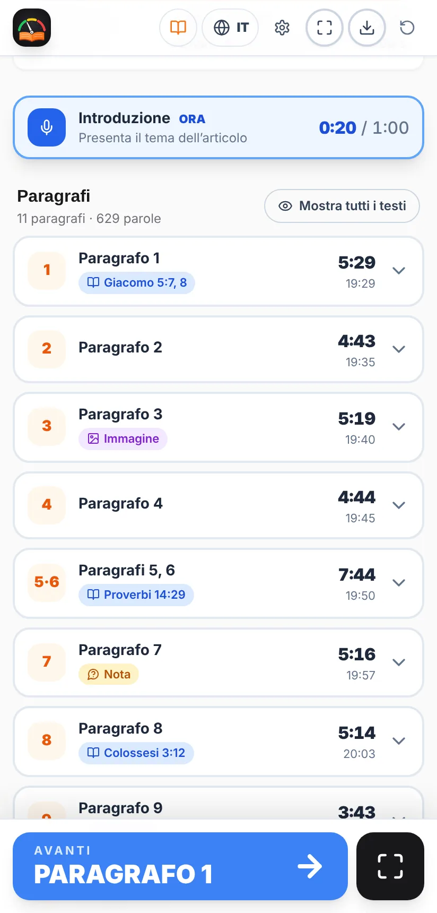
Introduzione in corso.
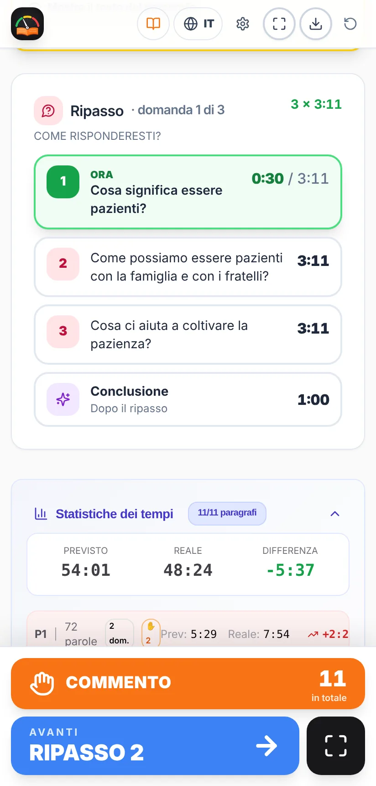
Domande di ripasso: quella attuale è indicata con “ORA”.
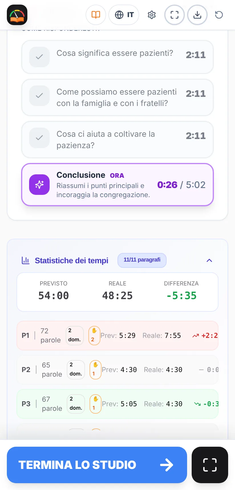
Conclusione e, sotto, le statistiche.
Nella scheda del piano, in alto, puoi mettere in pausa e riprendere lo studio. L’avviso “Deve finire tra m:ss” ti ricorda quanto manca all’ora di fine.
Lo schermo non si spegne mentre lo studio è in corso, così non devi toccare il telefono. Alla fine il telefono torna a spegnere lo schermo come sempre.
8I colori: verde, giallo e rosso
La scheda della parte in corso (paragrafo, introduzione, domanda di ripasso o conclusione) cambia colore in base al tempo trascorso:
Colore
Quando
Che cosa fare
IN TEMPO
Fino al tempo previsto.
Tutto bene: continua così.
TOLLERANZA
Ha superato il suo tempo, ma non più del 30%.
Comincia a chiudere i commenti.
SFORATO
Oltre il 30% in più del previsto.
Passa al paragrafo successivo.
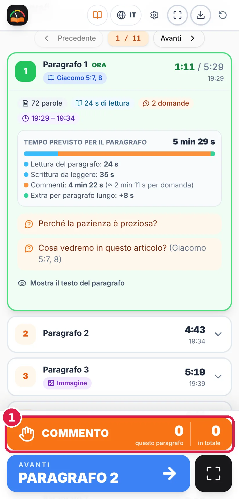
In tempo.
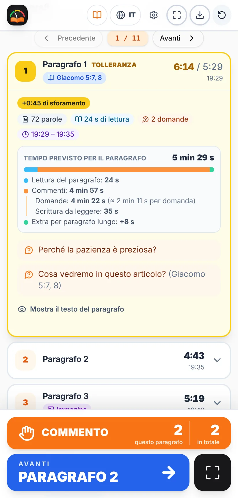
Tolleranza, con il tempo di sforamento.
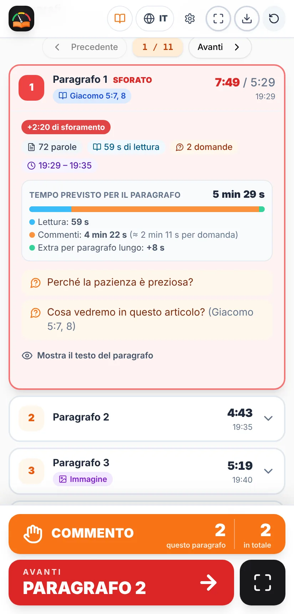
Sforato.
Negli ultimi 5 minuti dello studio i paragrafi e le domande di ripasso non hanno tolleranza: passano direttamente dal verde al rosso, per non togliere tempo alla parte finale. La conclusione mantiene sempre la sua tolleranza.
Se una parte si allunga, nessun problema: quando tocchi Avanti, l’app ridistribuisce il tempo rimasto tra ciò che manca, per finire in orario.
9La modalità presentazione
È il modo consigliato di condurre lo studio. La modalità presentazione evita distrazioni: mostra solo ciò che serve, i colori verde, giallo e rosso ti dicono con un’occhiata a che punto sei e come sei messo con i tempi, e i pulsanti Avanti e Commento sono grandi e facili da trovare e premere.
Pensata per lasciare il telefono o il tablet sul leggio o sul podio: tutto grande e facile da vedere. Si apre con il pulsante ⛶ della barra inferiore e si chiude con ✕ (o con il tasto Esc sul computer).
In alto mostra l’ora attuale, l’ora di fine e il tempo restante, con una barra di avanzamento. Al centro, la parte in corso con il cronometro e il colore, e le etichette (per esempio, Leggere Giacomo 5:7, 8). In basso, i pulsanti Commento e Avanti.
Ci sono tre layout. Si cambiano con il pulsante del layout ▦ (in alto a destra) o in Impostazioni → Schermo:
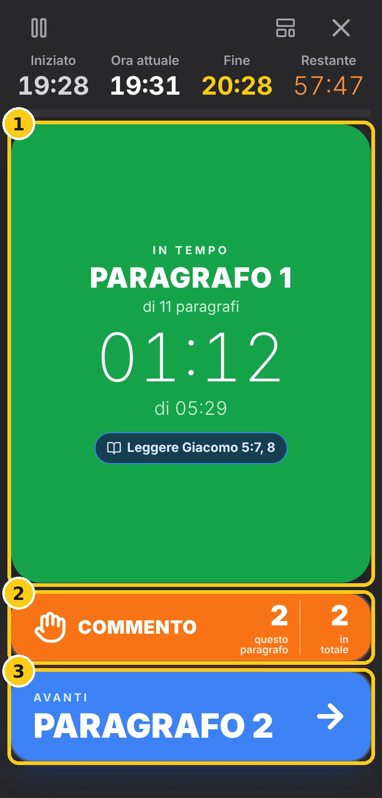
Pannello ordinato: scuro, con un grande riquadro colorato.
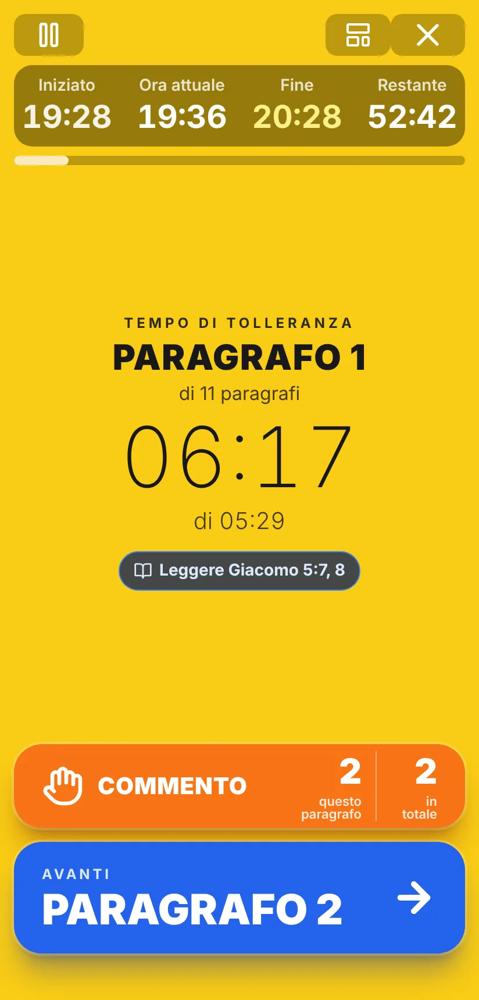
Semaforo: tutto lo schermo cambia colore.
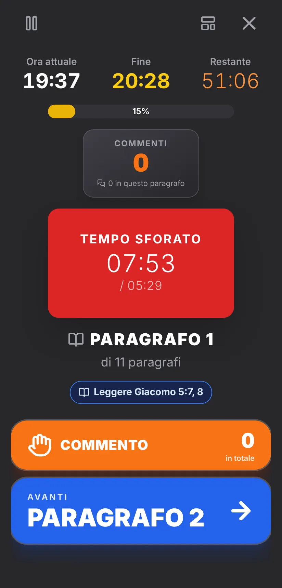
Classico: il layout di sempre, con il contatore degli interventi.
In modalità presentazione il pulsante grande avanza da solo nello studio: Inizia lo studio → Vai al paragrafo 1 → Paragrafo successivo → Domanda di ripasso → Vai alla conclusione → Termina lo studio. Negli ultimi 5 minuti compare l’avviso che è ora di finire.
10Come si calcolano i tempi
Lettura di ogni paragrafo = le sue parole ÷ la velocità di lettura (150, 180 o 210 parole al minuto), più il tempo per risposta scelto nelle Impostazioni (minimo 30 secondi; 35 se non modificato) per ogni versetto da leggere, immagine, nota o punto chiave. Se il conduttore vuole più tempo per commentarli, può aumentare il tempo per risposta. La lettura non viene mai accorciata né allungata.
Introduzione e conclusione hanno sempre riservato il tempo che imposti nelle Impostazioni (1 minuto ciascuna, se non modificato).
Commenti: il tempo che resta viene distribuito tra tutte le domande (dei paragrafi e di ripasso). I paragrafi lunghi o raggruppati ricevono un po’ più di tempo per i commenti, in base alla lunghezza.
Durante lo studio: il piano della parte in corso non cambia. Ogni volta che tocchi Avanti, ciò che resta viene ricalcolato con il tempo disponibile fino all’ora di fine, riservando la conclusione.
Esempio (l’articolo delle immagini): in uno studio di 60 minuti con 11 paragrafi e 21 domande (18 dei paragrafi e 3 di ripasso), con il tempo per risposta a 35 secondi, circa 7 minuti sono di lettura, 2 minuti di introduzione e conclusione e circa 51 minuti di commenti: poco più di 2 minuti per domanda.
11Impostazioni
Tocca ⚙ in alto a destra. Le impostazioni vengono salvate sul tuo dispositivo e sono divise in quattro schede:
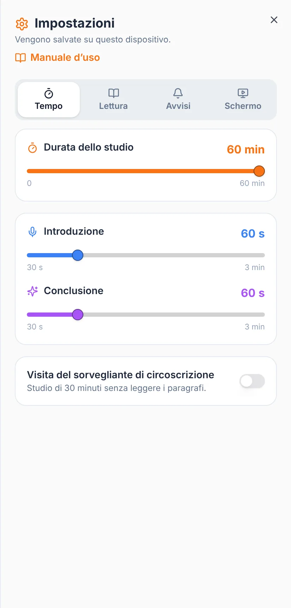
Tempo
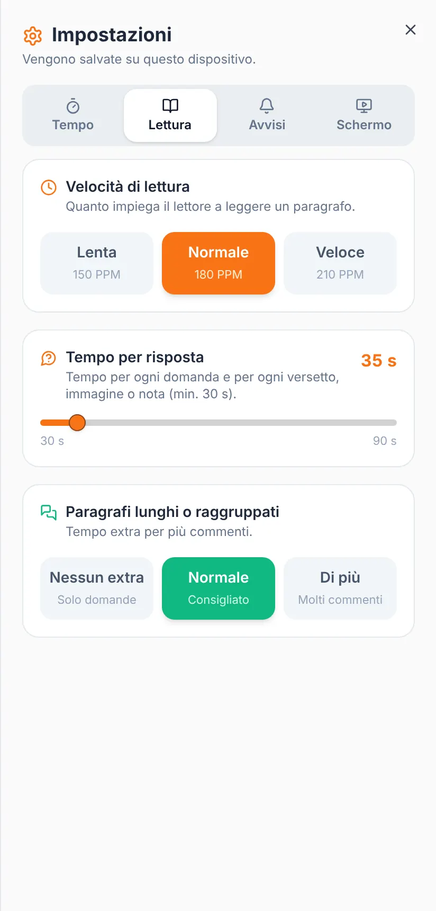
Lettura
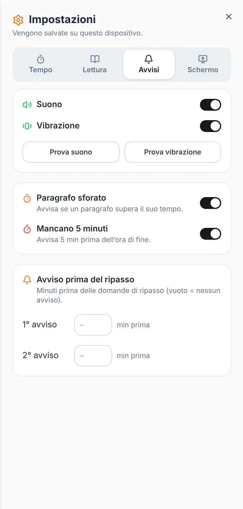
Avvisi
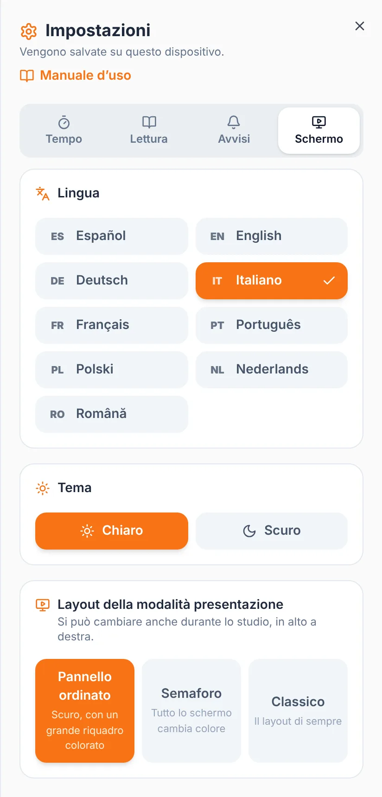
Schermo
Scheda
Che cosa puoi cambiare
Tempo
Durata dello studio (fino a 60 min). Durata dell’introduzione e della conclusione (da 30 s a 3 min). Visita del sorvegliante di circoscrizione.
Lettura
Velocità di lettura del lettore: Lenta (150), Normale (180) o Veloce (210 parole/min). Tempo per risposta (da 30 a 90 s; vale anche per ogni versetto, immagine, nota o punto chiave). Paragrafi lunghi o raggruppati: Nessun extra, Normale o Più commenti.
Avvisi
Suono e vibrazione (con pulsanti per provarli). Avviso di paragrafo sforato, avviso “Mancano 5 minuti” e fino a due avvisi prima del ripasso.
Schermo
Lingua, tema chiaro o scuro (con quattro varianti scure) e il layout della modalità presentazione.
Se cambi la velocità di lettura o il tempo per risposta con lo studio in corso, la modifica vale per lo studio successivo.
12Avvisi sonori e a vibrazione
Paragrafo sforato: suona quando il paragrafo in corso supera il suo tempo.
Mancano 5 minuti: 5 minuti prima dell’ora di fine, con suono, vibrazione e un messaggio sullo schermo.
Prima del ripasso: scrivi quanti minuti prima delle domande di ripasso vuoi un avviso (per esempio, 10 e 5). Lascia vuoto se non lo vuoi.
Poco tempo per il ripasso: se restano meno di 20 secondi per domanda di ripasso, l’app ti avvisa.
Controlla che il telefono non sia in modalità silenziosa se vuoi sentire gli avvisi. La vibrazione funziona su Android; su iPhone dipende dal browser.
13Visita del sorvegliante di circoscrizione
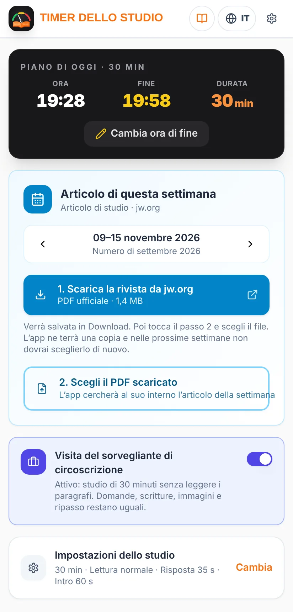
Interruttore attivo: studio di 30 minuti.
Nella settimana della visita attiva l’interruttore “Visita del sorvegliante di circoscrizione” nella schermata iniziale (o in Impostazioni → Tempo). Lo studio dura 30 minuti e i paragrafi non si leggono: restano le domande, i versetti, le immagini e il ripasso. Ricordati di disattivarlo dopo la visita.
14Lingue
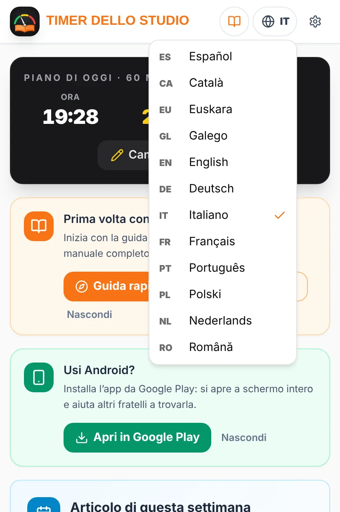
Menu della lingua.
L’app funziona in spagnolo, inglese, tedesco, italiano, francese, portoghese, polacco, olandese e rumeno. Cambia lingua con il pulsante del globo in alto o in Impostazioni → Schermo. Quando cambi lingua:
tutta l’app compare in quella lingua, con le sue date e ore;
il pulsante di jw.org scarica La Torre di Guardia nella stessa lingua. È la lingua dell’app a decidere la lingua della rivista;
in portoghese l’app chiede una volta se preferisci l’edizione del Portogallo o quella del Brasile. Puoi cambiarlo poi in Impostazioni → Schermo.
Questo manuale è disponibile in tutte queste lingue: usa i pulsanti della lingua in alto.
15Alla fine: statistiche ed esportazione
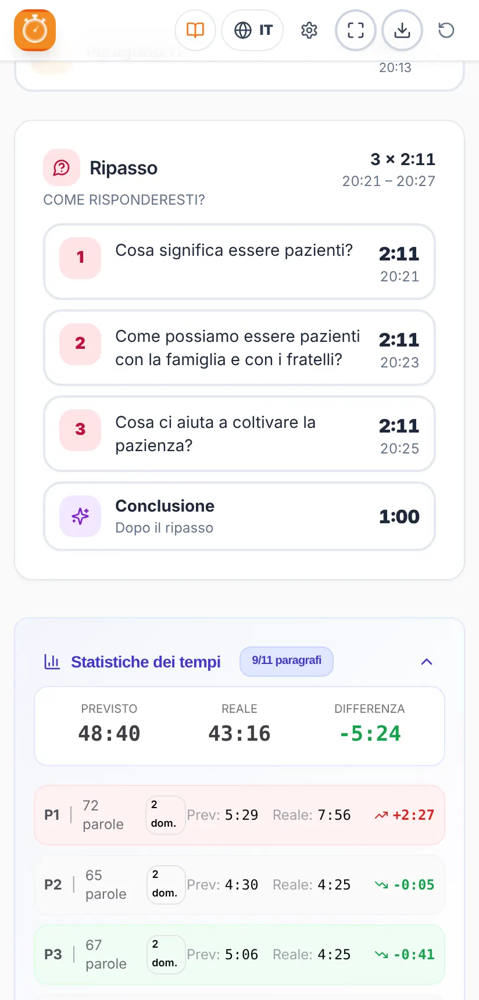
Statistiche dei tempi per paragrafo.
Le Statistiche dei tempi confrontano il tempo previsto con quello reale per tutto lo studio e per ogni paragrafo, con la differenza in verde (più veloce) o rosso (più lento) e i commenti segnati. Servono a vedere quali parti si sono allungate e a regolarti la volta successiva (per esempio, la velocità di lettura).
Con il pulsante esporta⬇ della barra superiore puoi salvare il piano dello studio come immagine (PNG) o come PDF, per stamparlo o condividerlo.
Per preparare un altro studio, usa il pulsante ricomincia↻.
16Domande frequenti
Posso condurre leggendo i paragrafi e le domande nell’app?
No. L’app li mostra solo per calcolare i tempi. Per condurre usa sempre JW Library o la Torre di Guardia stampata.
Perché La Torre di Guardia è stata scaricata in un’altra lingua?
La rivista viene scaricata nella lingua dell’app. Cambia la lingua con il pulsante del globo e tocca di nuovo “Scarica la rivista da jw.org”.
Dice che non riconosce il formato dell’articolo.
Usa il PDF ufficiale della Torre di Guardia, edizione per lo studio, scaricato da jw.org (il pulsante “Scarica la rivista da jw.org” lo fa per te). I PDF scansionati o fatti con screenshot non si possono leggere.
Non trova l’articolo della settimana nella rivista.
Controlla che la settimana scelta corrisponda a quel numero della rivista. Altrimenti l’app mostra l’articolo più vicino e ti fa scegliere un’altra settimana.
Mi serve internet durante lo studio?
Solo per scaricare la rivista. Una volta caricato l’articolo, il timer funziona senza connessione.
Sono arrivato tardi o ho iniziato in ritardo: che cosa faccio?
Apri il paragrafo a cui siete arrivati e tocca “Inizia da qui”. L’app distribuirà il tempo rimasto.
Voglio finire a un’ora precisa.
Usa “Cambia ora di fine” nel piano di oggi e scrivi l’ora. Tutto viene calcolato per finire a quell’ora.
Gli avvisi non suonano.
Controlla in Impostazioni → Avvisi che siano attivi, tocca “Prova suono” e verifica che il telefono non sia in modalità silenziosa.
Quali dati salva l’app?
Solo le tue impostazioni e le riviste che scegli di conservare, sempre sul tuo dispositivo. Non ci sono account e nessun dato viene inviato a un server. Maggiori informazioni nell’informativa sulla privacy.